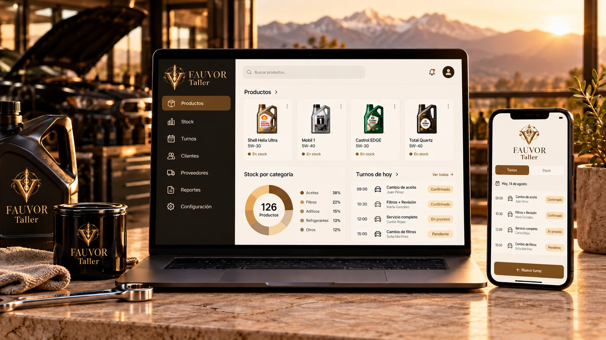
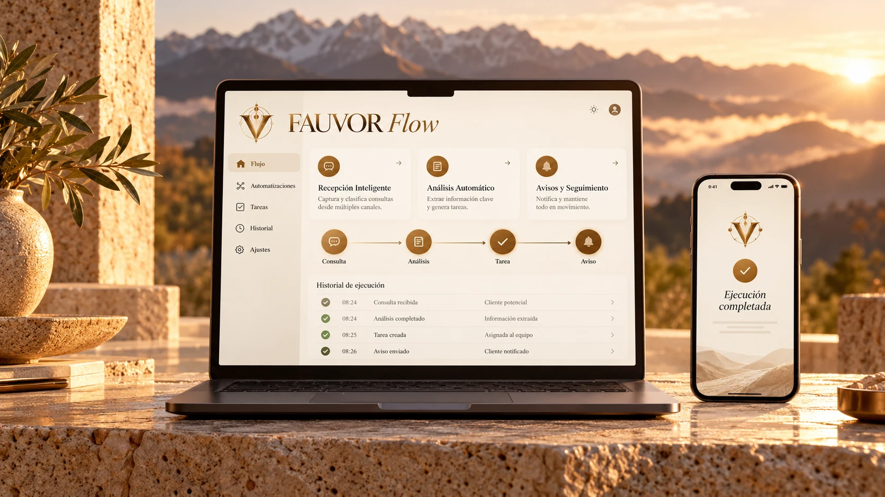

Instinto
40%
Reducción de tiempos operativos
Eficiencia temporalMenos tiempo dedicado a la gestión de tareas generales y flujos internos de los equipos.
Desarrollo · Estrategia · Resultados
En FAUVOR analizamos los procesos de cada cliente y desarrollamos aplicaciones para gestionar ventas, finanzas y operaciones. Integramos datos e inteligencia artificial según las necesidades del negocio, desde la definición de los requisitos hasta la implementación.
Ver proyectos ⟶Instinto · Criterio · Visión
Resultados del modelo aplicado en organizaciones piloto.
40%
Reducción de tiempos operativos
Eficiencia temporalMenos tiempo dedicado a la gestión de tareas generales y flujos internos de los equipos.
15
Organizaciones piloto
Adopción del modeloImplementado y probado en empresas y organizaciones asociadas de distintos entornos de negocio.
Más productividad
por hora efectiva.
Continuidad del servicio
Entregas y satisfacción sostenidasLa reducción del tiempo operativo mantuvo el volumen de entregas y los indicadores de satisfacción.
Resultados reportados por FAUVOR en 15 organizaciones piloto. El alcance corresponde a tiempos operativos y gestión de tareas generales.
Proyectos destacados
Desde el control de gastos hasta el seguimiento de clientes: elegí un caso, abrí la demo y recorré sus funciones.

Sistema de Gestión para Productos, Stock y Turnos
Explorar demo ↗Conocer implementación ↗Ingesta, Calidad y Visualización de Datos con Python
Explorar demo ↗Conocer implementación ↗
Automatizaciones para negocios, de la entrada al resultado
Explorar demo ↗Conocer implementación ↗Proyectos de Francisco Agustín Delgado · Demos y código disponibles.Portadas conceptuales · Explorá cada demo para ver la interfaz real.
Nuestras capacidades
Combinamos interfaces claras, análisis de información e IA según lo que necesita cada negocio.
Conocé más ⟶Nuestra esencia
De la necesidad a la solución.
Nosotros
FAUVOR desarrolla soluciones digitales para empresas que necesitan mejorar su gestión, conectar información y resolver desafíos operativos. Combinamos desarrollo de software, inteligencia artificial, análisis de datos y estrategia comercial para abordar cada proyecto desde el negocio hasta su implementación.
Nuestro trabajo comienza por comprender cómo opera cada organización: sus objetivos, procesos, recursos y prioridades. Con ese contexto definimos el alcance, construimos una primera versión funcional y la mejoramos con la participación del equipo que la utiliza.
Ingeniería de software y arquitectura de sistemas
Lidera el diseño y desarrollo de aplicaciones, la integración de plataformas y la incorporación de inteligencia artificial en herramientas empresariales. Traduce las necesidades del cliente en requerimientos concretos y soluciones que pueden ponerse en funcionamiento y evolucionar.
Su aporte combina capacidad de resolución y rapidez de ejecución, desde la página web hasta las herramientas de gestión y sus conexiones. Trabaja sobre versiones funcionales que permiten probar, detectar ajustes y avanzar con observaciones del uso real.
Estrategia de negocios e inteligencia de mercado
Aporta análisis de mercado, posicionamiento, marketing estratégico 360° e inteligencia comercial. Vincula las necesidades de cada organización con oportunidades de crecimiento y ayuda a definir prioridades alineadas con sus objetivos.
Su trabajo conecta negocio, comunicación y ventas: desde comprender a los clientes y desarrollar una propuesta de valor hasta orientar acciones comerciales y evaluar su desempeño mediante información e indicadores.
La colaboración entre ambas disciplinas permite definir qué conviene construir, cómo implementarlo y cómo evaluar sus resultados. FAUVOR desarrolla y acompaña; el equipo del cliente participa, prueba y aporta las observaciones necesarias para mejorar cada entrega.
Velocidad para resolver. Uso real para mejorar.
Francisco lidera el desarrollo de punta a punta: página, aplicación y puesta en marcha. En FAUVOR trabajamos para entregar una primera versión funcional en 24 horas y ajustarla durante los siguientes tres días, con un alcance inicial acordado.
Definimos la prioridad y ponemos en marcha un piloto que tu equipo pueda usar.
Corregimos problemas y refinamos el funcionamiento a partir de las pruebas del equipo.
FAUVOR desarrolla y resuelve. Tu empresa usa el piloto, prueba sus procesos y aporta observaciones.
La prueba piloto es parte del trabajo: necesitamos un responsable de tu equipo, uso diario y devoluciones concretas para identificar mejoras y completar la puesta a punto.
Quiero poner en marcha mi piloto ⟶